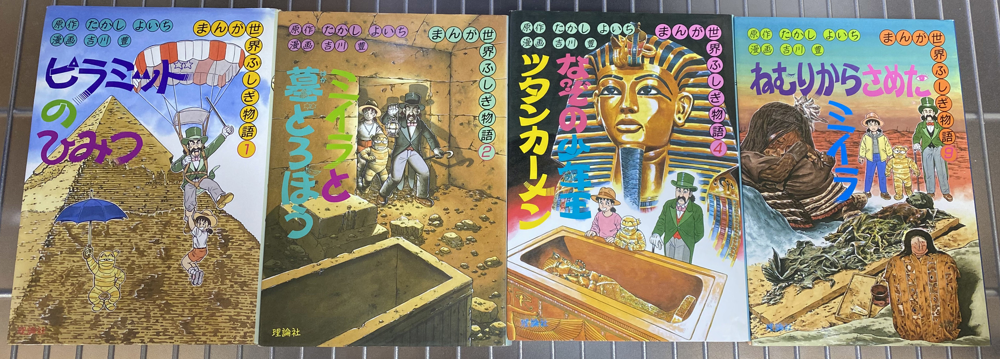
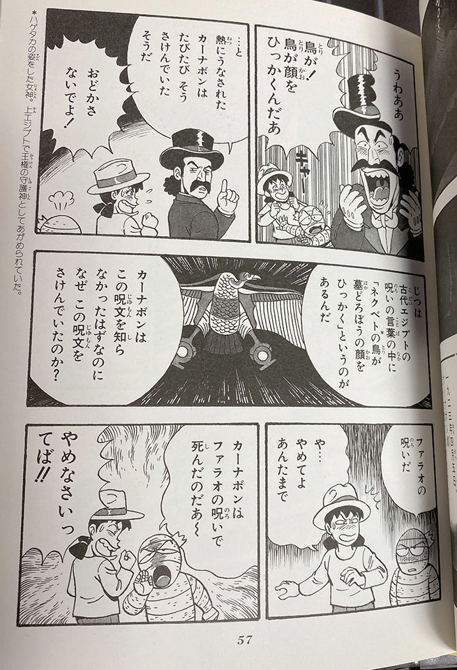

懐かしの「まんが世界ふしぎ物語」を再購入してみた
小学校の頃、図書室にあった「まんが世界ふしぎ物語」という漫画本が好きでよく読んでいた。今回、Amazon でそれらが買えるのを見つけたので、特に記憶に残っている4冊を購入してみた。

- 1 ピラミッドのひみつ
- 2 ミイラと墓どろぼう
- 4 なぞの少年王ツタンカーメン
- 9 ねむりからさめたミイラ


他の本も忘れていたワケではなく、中身もだいたい覚えている。
- 3 王家の谷にねむる宝
- 5 まぼろしの王国トロイア
- 6 よみがえる黄金の宝
- 7 ジャングルにきえたマヤ
- 8 インカ帝国のひみつ
- 10 日本にのこるなぞのミイラ
一番記憶に残っているのは「ツタンカーメン」かな。

うわああ 鳥が！鳥が顔をひっかくんだあ
…と 熱にうなされたカーナボンはたびたび そうさけんでいたそうだ
じつは古代エジプトの呪いの言葉の中に「ネクベトの鳥が墓どろぼうの顔をひっかく」というのがあるんだ
カーナボンはこの呪文を知らなかったはずなのに なぜ この呪文をさけんでいたのか？
※ネクベト : ハゲタカの姿をした女神。上エジプトで王権の守護神としてあがめられていた。
この逸話が記憶に残ってるんだが、今それらしい文言で検索しても全然ヒットしない。その中でヒットした以下のページは、この本を読んだのではないかと思っている。
ウーン懐かしい！それだけ。ｗ